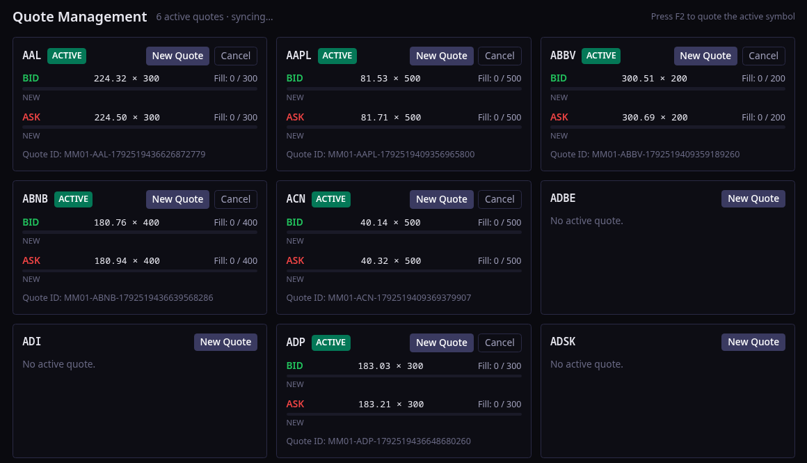
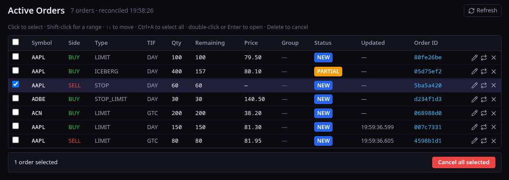
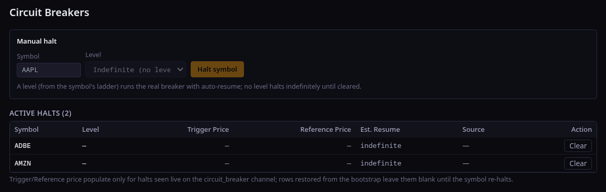

Trading GUI
pm-trading-uilocalhost:8093read / write
A full trading workstation in the browser. Log in with an API key and the participant's role decides what you see.
- Trading Workspace — candlestick chart, 5/10/20-level depth ladder, order ticket, working-orders blotter.
- Eight order types in the ticket: market, limit, stop, stop-limit, FOK, iceberg, IOC, trailing stop.
- Click the ladder to pre-fill a ticket from a bid or an ask.
- Market-maker view — a quote-management grid with live fills per symbol.
- Operator view — session control, halts, circuit breakers and the kill switch.
- Watchlist, news, positions and trade history; key held in memory only.
localhost:8093 — Trading Workspace



